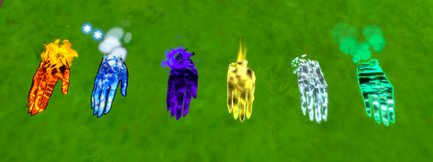

技能
按职业顺序汇总各职业技能。
Spellsword
主技能：Telekinetic Strike
挥动你的剑，造成 65 点物理伤害。
10% 概率施加 BLEEDING 状态效果。
副技能：Piercing Strike
蓄力，然后释放一次中距离穿刺攻击，造成 X-X 点物理伤害。
最高有 50% 概率施加 BLEEDING 状态效果。
射程、伤害和流血概率会随蓄力时间提高。
辅助技能：Quick Dash
朝当前移动方向进行一次冲刺。
冷却 3 秒。
Twinmage

Twinmage 的不同元素手Twinmage 的独特之处在于，它没有固定的主技能或副技能，而是可以为每只手从六种元素中选择一种。
Hand：Flaming Hand
发射一颗火球，造成 30 点火焰伤害。
10% 概率施加 BURNING 状态效果。
投射物速度为 16m/s，最大距离 50m。
Hand：Ice Hand
发射一枚冰霜飞弹，造成 30 点冰霜伤害。
10% 概率施加 FREEZING 状态效果。
投射物速度为 20m/s，最大距离 50m。
Hand：Electric Hand
施放一道闪电，造成 25 点电击伤害。
10% 概率施加 PARALYZED 状态效果。
这是命中扫描攻击，最大距离 50m。
Hand：Wind Blade
发射一道旋风，造成 30 点物理伤害。
10% 概率施加 BLEEDING 状态效果。
投射物速度为 18m/s，最大距离 50m。
Hand：Divine Hand
发射一颗光球，造成 30 点光耀伤害。
10% 概率施加 WEAKENED 状态效果。
投射物速度为 24m/s，最大距离 50m。
Hand：Profane Hand
发射一枚暗影飞弹，造成 30 点暗影伤害。
10% 概率施加 BREACHED 状态效果。
投射物速度为 12m/s，最大距离 50m。
辅助技能：Quickwarp
传送到你所指方向 15 米处。
冷却 6 秒。
Gunmancer
主技能：
VA-11 Blast Cannon
发射一次远距离命中扫描攻击，造成 50 点电击伤害。
此外，在攻击命中的位置产生一次小爆炸，造成该投射物 50% 的伤害。
或
Kinetic Fletchette
发射一枚远距离投射物，造成 75 点物理伤害。该投射物可以穿透多个敌人。
15% 概率施加 BLEEDING 状态效果。
副技能：
Firebomb
发射一枚受重力影响很强的爆炸投射物，造成 50 点火焰伤害。
该攻击命中后会在较大范围内爆炸，造成投射物 100% 的伤害。
Photon Condenser
快速发射高速子弹，造成光耀伤害。
5% 概率施加 WEAKENED 状态效果。
Antimatter Accelerator
发射一片散射弹幕，造成暗影伤害。按住可收窄散布。
5% 概率施加 BREACHED 状态效果。
辅助技能：Airblast
将自己向上弹射，然后短时间内大幅降低重力。短暂延迟后，你下一次发射的技能会造成双倍伤害。
如果要冲刺，你必须站定，并在朝另一个方向移动时按下辅助技能键。
弹射冷却 12 秒。
冲刺冷却 3 秒。
Fistmage
主技能：Aura Fist
蓄力并释放拳击，造成 55-100 点物理伤害。
副技能：Deflecting Swipe
挥击，造成 40 点物理伤害。
挥击后获得一个短暂窗口，下一次你受到的伤害会被完全偏转。成功偏转攻击会给予你 EMPOWERED，持续 X 秒，治疗你 25 点生命，并立即重置冷却。
冷却 X 秒。
辅助技能：Super Endurance
进入坚忍姿态 5 秒。在此期间，你失去 X% 移动速度，并获得 X% 防御提升。
冷却 12 秒。
Spellhammer
主技能：Pummel
挥动你的锤子，造成 110 点物理伤害并击退敌人。
挥动期间你的移动速度会提高到两倍，并且该技能会直接随攻击速度缩放。
副技能：
Jump Smash
向上跳起，然后释放技能砸回地面，造成 X 点物理伤害并击退敌人。落在敌人正上方时，会根据你的初始高度造成每 X 额外 X 点伤害，并把你再次弹起。
或
Chuck
按住后松开，将锤子投出，造成物理伤害。伤害根据你持有投掷蓄力的时间缩放，最高 110 点伤害。
辅助技能：Disperse
释放一次大范围爆炸，造成 X 点物理伤害，并向后跳开。
冷却 8 秒。
Shield Mage
主技能：Offensive Strike
向前投掷你的盾牌，造成 50 点物理伤害。使用 Defensive Stance 时，向前盾击，造成 25 点物理伤害并击退敌人。
副技能：Defensive Stance
按住以用盾牌防御，格挡命中盾牌的来袭伤害，并使你的移动速度降低 X%。
格挡攻击时会为 ICEBURST 充能。放下盾牌时释放 ICEBURST，在你周围半径内造成高额冰霜伤害；伤害与你承受的伤害成比例，威力与格挡的攻击数量成比例。
辅助技能：Evasive Maneuver
在原地停住 5 秒，在你周围生成不可穿透的护盾。该护盾会使 PURPLE 攻击伤害降低 50%。使用 Defensive Stance 时，则朝移动方向进行一次短冲刺。
冷却 4 到 16 秒，取决于护盾大小。
Thaumaturge
被动
伤害敌人会积累 LIFE ENERGY；获得的 LIFE ENERGY 与你造成的伤害成比例。
主技能：Foul Pustule
发射一颗毒液球，造成 30 点毒伤害。
10% 概率施加 POISON 状态效果。
投射物速度为 Xm/s，最大距离 Xm。
副技能：Pain Exchange
花费 25% LIFE ENERGY 治疗自己或一名盟友。
冷却 X 秒。
辅助技能：Soulborne
进入吸收姿态 4 秒，提高移动速度 X%，提高防御 X%，并把受到的任何伤害转化为 LIFE ENERGY。
冷却 10 秒。
Nekomancer
被动
收集每 X 秒在场地周围生成的 SOUL。被击杀的敌人有 X% 概率留下 SOUL。
主技能：Staff of Feline Mortality
发射一枚投射物，造成 X 点暗影伤害。命中的敌人会被标记为 Undead Kitties 的目标。
10% 概率施加 BREACHED 状态效果。
副技能：Call of the Undead
花费 1 个 SOUL，召唤多种 Undead Kitties 之一。
使用技能会开始召唤流程。在召唤流程期间再次按下技能，可以在召唤物之间切换选择。
| 所有 Nekomancer 召唤物图片 | 类型 | 说明 |
|---|---|---|
 |
Zombie Kitty | 地面单位，造成暗影伤害。 |
 |
Balloon Kitty | 空中单位，造成火焰伤害。 |
 |
Ballista Kitty | 空中单位，造成物理伤害。 |
 |
Totem Kitty | 治疗你和小范围内的盟友。一段时间后会消失。 |
最大召唤数量随玩家数量缩放：
| Nekomancer 玩家数量 | 每人最大召唤数 |
|---|---|
| 1-2 名 Nekomancer | 最多 3 个召唤物 |
| 3-6 名 Nekomancer | 最多 2 个召唤物 |
| 7 名以上 Nekomancer | 最多 1 个召唤物 |
你最多可以持有 5 个 SOUL，未收集的 SOUL 会在 30 秒后消失。
辅助技能：Spirit Drift
进入无敌并向前漂移，持续 2 秒。
冷却 10 秒。